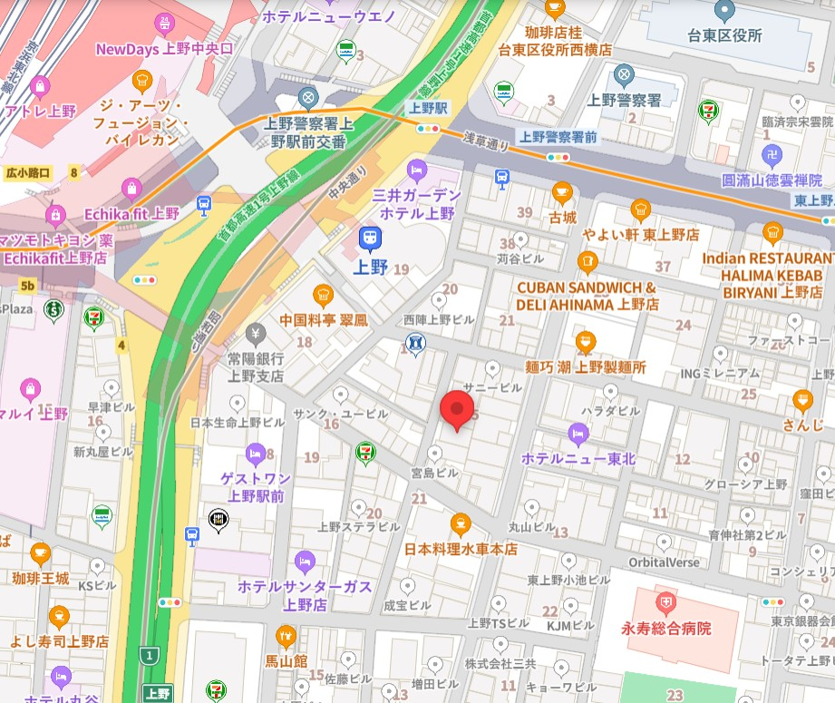

地域に根ざした医療
診療時間
| 時間帯 | 月 | 火 | 水 | 木 | 金 | 土 | 日 |
|---|---|---|---|---|---|---|---|
| 9:00〜12:00 | ● | ● | ● | ／ | ● | ● | ／ |
| 13:00〜18:00 | ● | ● | ● | ／ | ● | ／ | ／ |
●＝診療 ／＝休診
受付時間：午前 8:00〜11:00 ／ 午後 12:00〜17:00
休診日：木曜・土曜午後・日曜
※祝祭日も診療を行っておりますが、休診日もございますので、事前にご確認ください。
お知らせ
院長挨拶
こんにちは。佐藤医院の院長、佐藤太郎と申します。当院のホームページをご覧いただき、ありがとうございます。
佐藤医院では、「地域に根ざした医療」をモットーに、患者様一人ひとりに寄り添った医療を提供することを目指しております。日常的な健康管理から生活習慣病の予防、さらには専門的な診断や治療まで、幅広い内科診療を行い、地域の皆様の健康を支える役割を担っていきたいと考えております。
私たちは、患者様の不安を少しでも軽減し、安心して診療を受けていただけるよう、わかりやすい説明と丁寧な対応を心掛けております。また、近隣の医療機関とも連携し、必要に応じて高度医療へのアクセスもサポートいたします。どんな小さな不調でも、どうぞお気軽にご相談ください。
これからも、患者様の健康を第一に考え、地域の皆様に信頼される医療機関であり続けるため、スタッフ一同努力してまいります。どうぞよろしくお願いいたします。
佐藤医院 院長 佐藤 太郎
診療内容
当院では、地域の皆様の健康を支えるため、幅広い内科診療を行っております。日常的な体調管理から、各種の検査や治療に至るまで、どんなお悩みもお気軽にご相談ください。
一般内科診療
風邪や発熱、喉の痛み、頭痛、腹痛などの症状を中心に、一般的な体調不良の診療を行っています。また、原因不明の不調や軽い症状であっても、早期診断に努めております。
生活習慣病の診断・治療
高血圧症、糖尿病、脂質異常症（高コレステロール血症）、メタボリック症候群など、生活習慣病の診断と治療を行います。病気の進行を予防し、健康維持のための生活指導や薬物療法を行います。
消化器系の診療
胃痛、胃もたれ、胸やけ、便秘、下痢などの消化器系の不調に対応しています。必要に応じて胃カメラや超音波検査などを実施し、胃腸の健康をサポートします。
呼吸器系の診療
咳、息切れ、胸の痛みなど、呼吸器系の症状について診療を行っています。季節性の喘息やアレルギー性鼻炎、慢性閉塞性肺疾患（COPD）などにも対応し、適切な治療と予防をサポートします。
スタッフ紹介
地域の皆様に安心してご来院いただけるよう、スタッフ一同、誠心誠意対応いたします。それぞれの専門性と温かさを活かし、皆様の健康を支えるパートナーとしてお力になれるよう努めてまいります。
院長
佐藤 太郎
経歴
光明大学医学部卒業後、瑞穂中央総合病院で内科医として10年間勤務。その後、地域医療への貢献を目指し、佐藤医院を開院。
専門分野
生活習慣病、呼吸器疾患、内科全般
コメント
患者様にとって気軽に相談できる「かかりつけ医」を目指しています。どんな小さな不安でも、まずはご相談ください。
看護師長
鈴木 真理
経歴
白桜大学看護学部卒業後、緑が丘大学病院で10年勤務。地域医療に携わりたい思いから、佐藤医院に入職。
得意分野
親身な対応、注射・採血技術、健康管理指導
メッセージ
安心して治療を受けていただけるよう、いつも笑顔でお待ちしています。些細なことでもお気軽にご相談ください。
臨床検査技師
高橋 由美
経歴
東都臨床検査技術専門学校を卒業後、武蔵中央医療センターにて15年間の臨床検査技師としての経験を積む。
得意分野
血液検査、心電図検査、超音波検査
コメント
検査は不安が伴うこともありますが、できるだけリラックスしていただけるよう、優しく丁寧な対応を心がけています。
医療事務
山本 花
経歴
希望医療カレッジ卒業後、さくら診療所にて受付業務を担当。現在は佐藤医院で患者様対応を担当。
得意分野
受付業務、カルテ管理、医療費計算
コメント
皆様に気持ちよくご利用いただけるよう、笑顔と真心を大切にしております。初めての方もどうぞ安心してお越しください。
アクセス

ご来院の際は、交通状況にご注意ください。最寄駅から徒歩5分の便利な立地です。
〒123-4567
東京都台東区上野0-0-0
最寄駅：JR上野駅より徒歩5分
当院専用の無料駐車場：10台分あり
お問い合わせ
電話番号：00-0000-0000
FAX：00-0000-0000
メール：info@sato-clinic-test.jp
よくあるご質問
よくあるご質問ページへの導線を想定したアンカーです。
Web予約
予約サービスへの遷移先を想定したアンカーです。